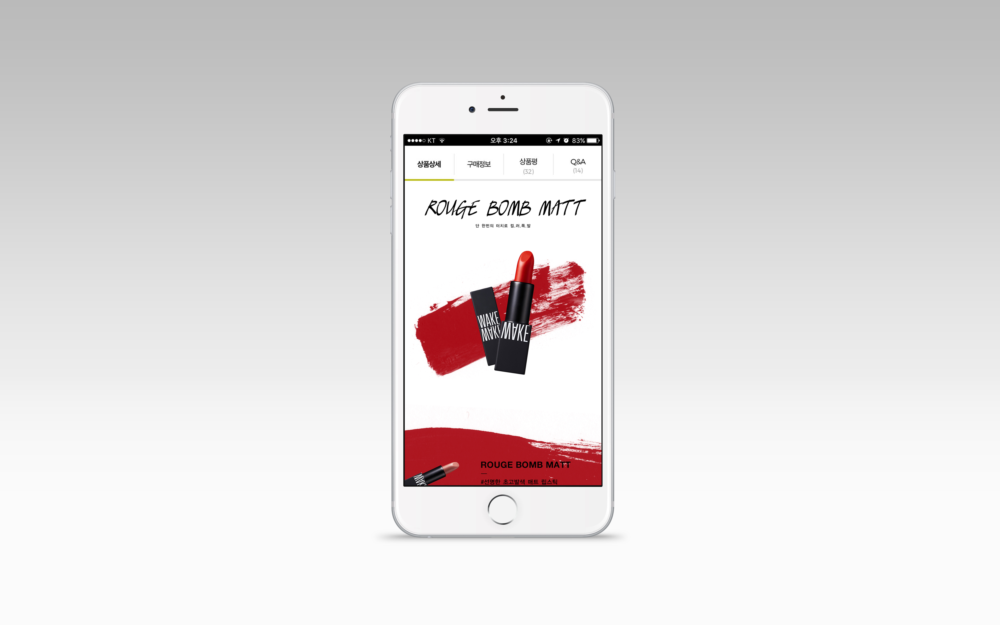
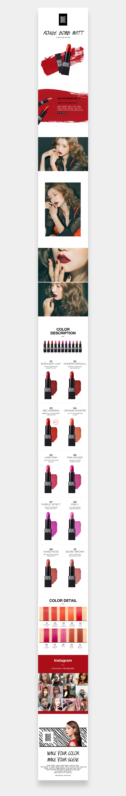

MAKEWAKE
OVERVIEW
MAKEWAKE의 제품 상세페이지 디자인이다.
MAKEWAKE의 선명한 고감도 HD컬러를 보여주기 위해 포인트 효과를 주었고,
제품만 설명하는 느낌보단 실제 발색 이미지를 같이 보여줌으로써 컬러감과 실제 립스틱의 느낌을
가상으로 느낄 수 있도록 상단의 모델 이미지와 하단의 제품의 모든 컬러의 발색력을 보여주었다.
제품 상세페이지 인스타그램 인증사진을 통하여 제품에 대한 만족도와 신뢰, 믿음을 더욱 돋보일 수 있도록 디자인 하였다.
- TYPE.
- UI/UX App Design
- CLIENT.
- MAKEWAKE
- Individual work.
- 2017.07~2017.07 (1 Day)
- URL.
- 메인이미지
- 작업내역
- Photoshop, Illustrator

